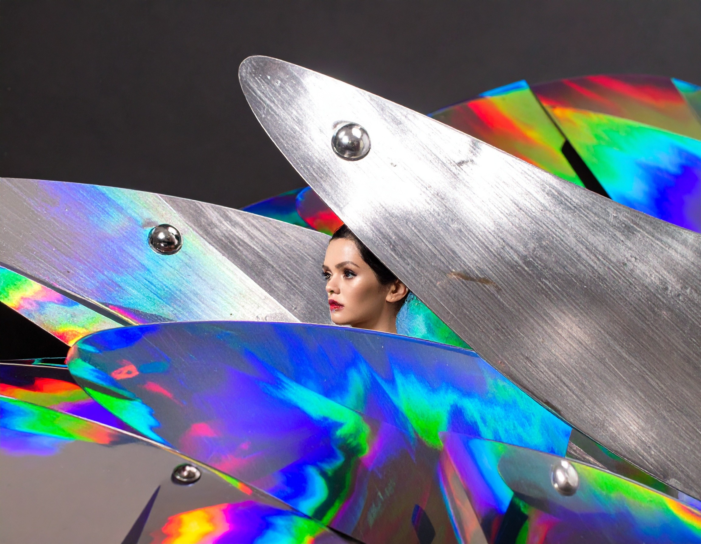
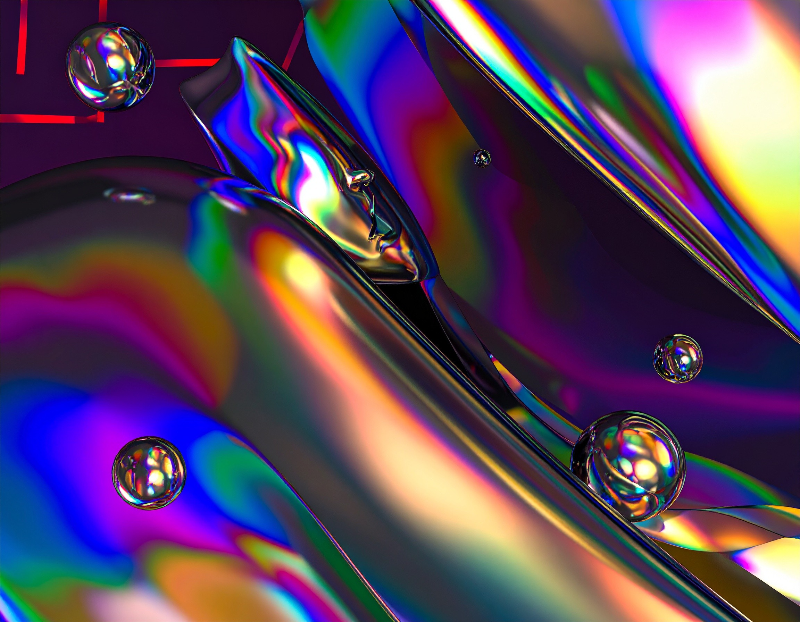

Experience Architecture
Frictionless interfaces, cinematic interactions, and UI systems tailored for premium digital brands.
RABBIT LABS
ExploreNEXT-GEN CREATIVE INTELLIGENCE
Rabbit Labs designs cinematic digital systems blending machine precision with human imagination.
View ImpactOUR SERVICES
Frictionless interfaces, cinematic interactions, and UI systems tailored for premium digital brands.
We turn product hypotheses into measurable momentum through rapid experimentation and insight loops.
Embedded AI workflows that elevate teams, accelerate delivery, and protect strategic focus.
IMPACT
0
Client retention rate
0
Average launch acceleration
0
Revenue lift in pilot year

VISUAL FEATURE
We compose immersive narratives with precise visual systems so every product touchpoint feels intentional, cinematic, and unforgettable.

